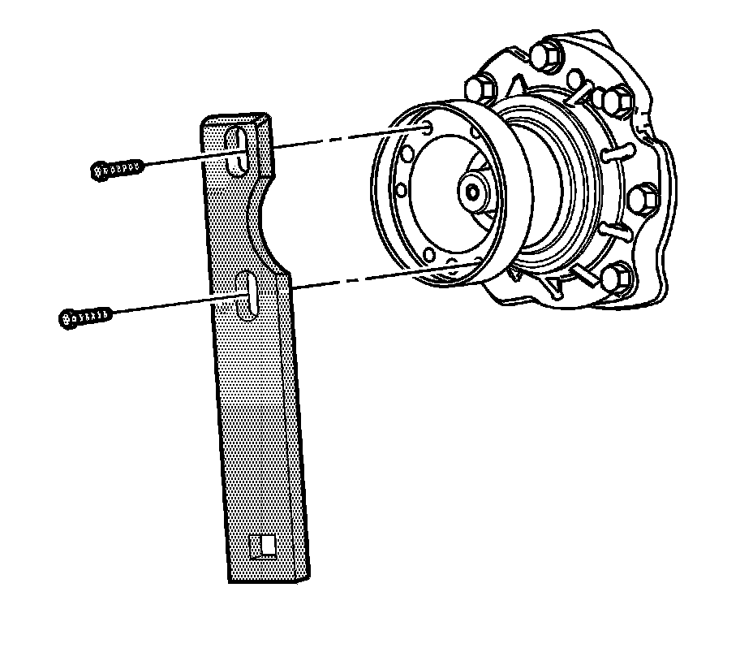
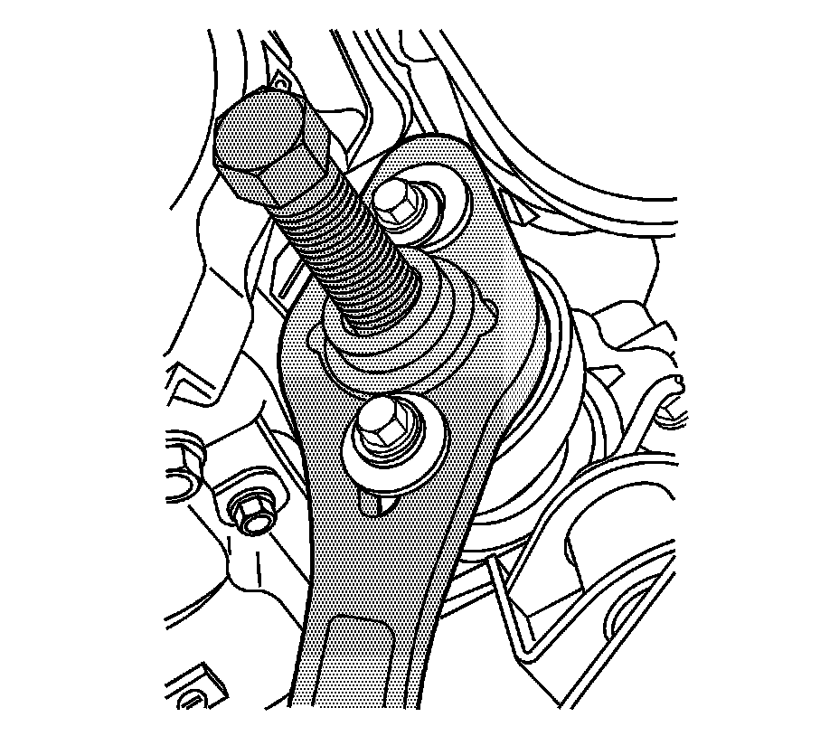
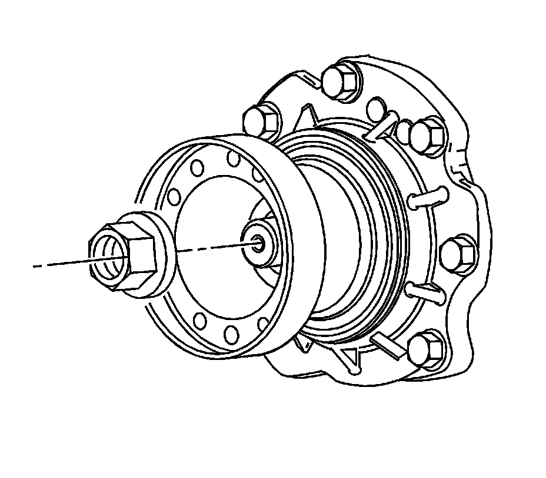
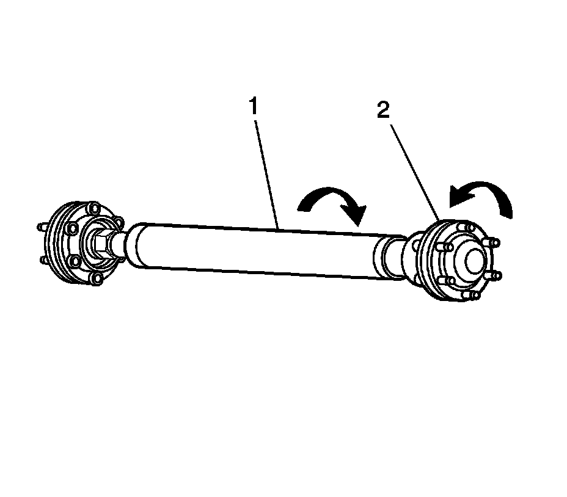

Front Drive Axle
Front Differential Drive Pinion Flange/Yoke, Seal, and Dust Deflector Replacement
Tools Required
* J 8614-01 Flange and Pulley Holding Tool
* J 46262 Pinion Sealer
* J 45012 Holding Fixture
Removal Procedure
1. Raise and support vehicle. Refer to Lifting and Jacking the Vehicle (Service and Repair) .
2. Remove the front propeller shaft. Refer to Front Propeller Shaft Replacement (Front Propeller Shaft Replacement) .
3. Remove the front axle propeller shaft heat shield bolts.
4. Remove the front axle propeller shaft heat shield.

5. Install the J 45012 to the drive pinion flange.
6. While holding the J 45012 remove the drive pinion flange nut.
7. Remove J 45012 from the drive pinion flange.

8. Install the J 8614-01 to the drive pinion flange.
9. Using J 8614-01 remove the drive pinion flange.
10. Remove the J 8614-01 from the drive pinion flange.
11. Using a flat-bladed tool carefully remove the drive pinion seal. Take care not to damage any sealing surfaces.
Installation Procedure
1. Lubricate the drive pinion flange sealing surface of the drive pinion seal with synthetic gear oil GM P/N 12378514 (Canadian P/N 88901045) or equivalent.
2. Install the drive pinion seal to the J 46262 .

3. Using J 46262 install the new drive pinion seal to the differential.
4. Remove the J 46262 from the new drive pinion seal.
5. Install the pinion flange to the drive pinion shaft.
Important: The pinion shaft threads and the pinion flange nut must be free of residue and debris prior to application of threadlocker in order to ensure proper adhesion and fastener retention.
6. Prepare the pinion shaft threads and the pinion flange nut for assembly:
1. Thoroughly clean the residue from the pinion shaft threads by using denatured alcohol or equivalent and allow to dry.
2. Thoroughly clean the residue from the pinion flange nut by using denatured alcohol or equivalent and allow to dry.
7. Apply threadlocker GM P/N 12345382 (Canadian P/N 10953489) or equivalent to 2/3 of the threaded length of the pinion shaft threads. Ensure that there are no gaps in the threadlocker along the length of the filled area of the pinion shaft threads.
8. Allow the threadlocker to cure approximately ten minutes before installation.

9. Install the drive pinion flange nut to the pinion shaft.
10. Install the J 45012 to the drive pinion flange.
Notice: Refer to Fastener Notice (Fastener Notice) .
11. While holding the J 45012 tighten the drive pinion nut.
Tighten the pinion flange nut to 241 N.m (178 lb ft).
12. Remove the J 45012 from the pinion flange.
13. Install the front axle propeller shaft heat shield.
14. Install the front axle propeller shaft heat shield bolts.
Tighten the bolts to 6 N.m (53 lb in).
15. Install the propeller shaft. Refer to Front Propeller Shaft Replacement (Front Propeller Shaft Replacement) .
16. Inspect the fluid level. Refer to Front Axle Lubricant Level Inspection (Front Drive Axle) .

Important: Ensure that there is no rotational movement between the constant velocity (2) and the propeller shaft tube.
17. Lower the vehicle.